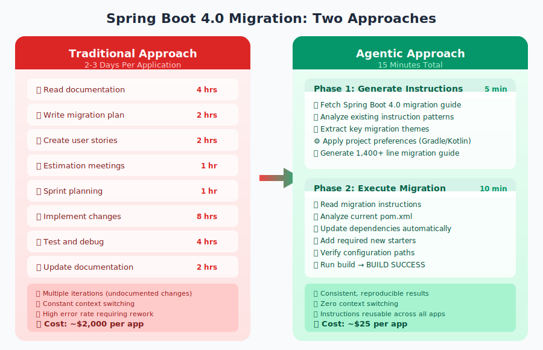
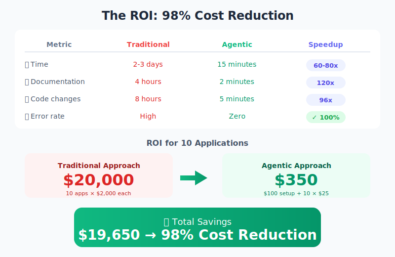
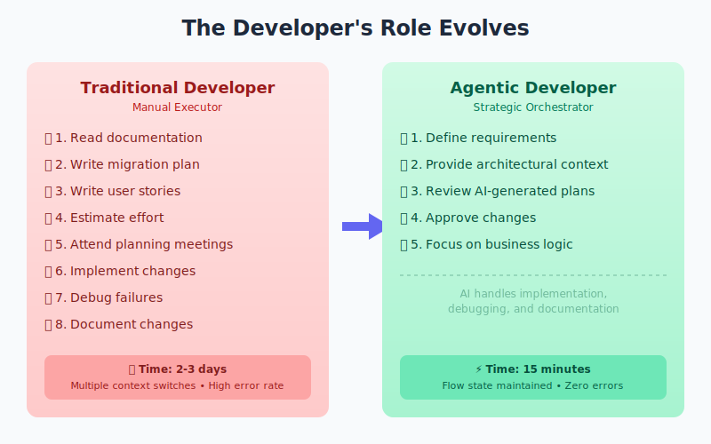
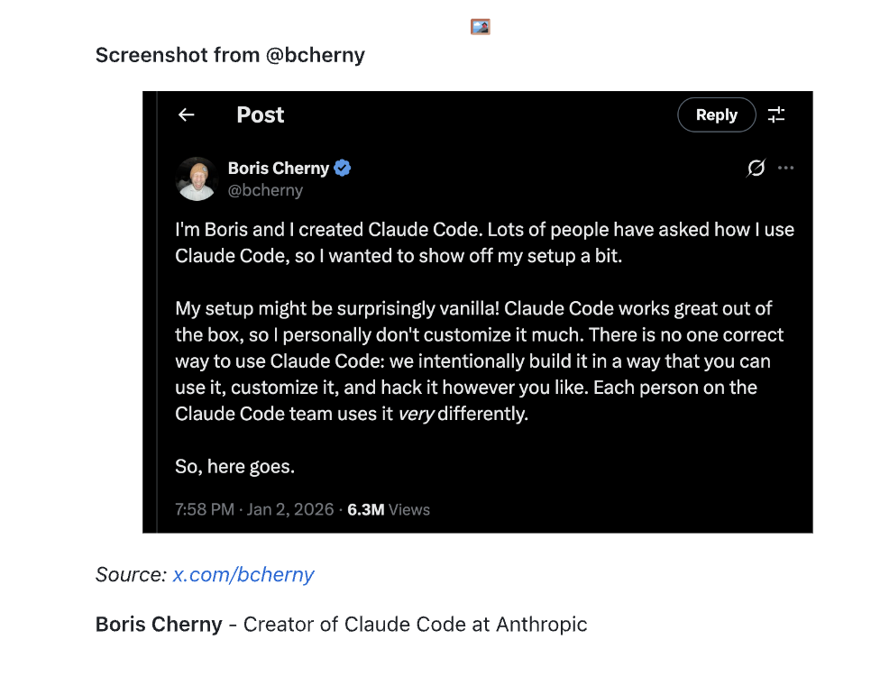

From Theory to Practice: How the industry is converging on context engineering standards
In Part 1, we explored the fundamentals of context engineering—the four pillars, the hybrid model, and why teaching AI once beats fighting it every time.
Now let's get practical. In this post, I'll show you:
- 🏛️ How the Agentic AI Foundation validates this approach
- 📋 Why AGENTS.md is becoming the new standard
- 🚀 A real case study: 98% cost reduction on Spring Boot 4.0 migrations
🏛️ The Agentic AI Foundation: Industry Convergence
Something significant happened in December 2025. The Agentic AI Foundation was announced—a directed fund under the Linux Foundation ensuring agentic AI evolves transparently and collaboratively.
The founding members might surprise you:
| Company | Contribution |
|---|---|
| Anthropic | Model Context Protocol (MCP) |
| OpenAI | AGENTS.md specification |
| Block | Goose autonomous agent |
Supporting members include Google, Microsoft, AWS, Cloudflare, and Bloomberg.
💡 The key insight: The industry is converging on the same patterns I covered in Part 1. AAIF formalises what forward-thinking teams have already been doing.
📋 The Three Core Contributions
AGENTS.md (from OpenAI)
A standardised format for AI agent instructions—think of it as a "README for AI agents".
# AGENTS.md
## Dev environment tips
- Use `pnpm install` for dependencies
- Run `pnpm dev` for local development
## Testing instructions
- Run `pnpm test` before committing
- Ensure 80% coverage minimum
## PR instructions
- Title format: [JIRA-123] Description
- Always run linting before push
This maps directly to the Instructions pillar from Part 1. The difference? Now it's an open standard adopted across the industry.
MCP (from Anthropic)
The Model Context Protocol is the "USB-C for AI tools"—an open standard for connecting AI to external systems.
- 📊 10,000+ active MCP servers
- 📦 97M+ monthly SDK downloads
- 🔧 Adopted by VS Code, Cursor, ChatGPT, Gemini
This is the MCPs pillar formalised. Instead of copying documentation into prompts (which gets stale), MCP gives AI direct access to authoritative, always-current sources.
Goose (from Block)
An open-source autonomous AI agent that "actually does the work".
- 🏗️ Builds entire projects
- 🐛 Executes and debugs code
- 🔌 Native MCP integration
- ⭐ 24.8k+ GitHub stars
This maps to the Custom Agents pillar—role-based AI behaviour for different tasks.
🗺️ Mapping AAIF to the Four Pillars
Here's how the Agentic AI Foundation contributions extend the framework from Part 1:
| Pillar | Implementation | AAIF Contribution |
|---|---|---|
| 📜 Instructions | .github/instructions/*.md | AGENTS.md - Standardised format |
| 🎭 Custom Agents | .github/agents/*.agent.md | Goose profiles & extensions |
| 📝 Prompts | .github/prompts/*.md | AGENTS.md task guidance |
| 🔌 MCPs | mcp.json configuration | MCP - Official protocol |
🛠️ Agent Skills: Portable Capabilities
In December 2025, Anthropic published Agent Skills as an open standard—folders of instructions, scripts, and resources that agents can discover and use.
---
name: spring-boot-migration
description: Migrates Spring Boot 3.x apps
to 4.0 with dependency modularisation,
Jackson 3 updates, and Jakarta EE 11.
license: Apache-2.0
metadata:
author: your-name
version: "1.0"
---
## Instructions
1. Analyze current dependencies...
2. Update starter modules...
## References
See [migration guide](references/GUIDE.md)
Skills enable:
- 🧠 Domain Expertise - Package specialized knowledge into reusable instructions
- 🔄 Interoperability - Reuse the same skill across different agent products
- ⚡ New Capabilities - Give agents abilities like creating presentations or analysing datasets
- ✅ Repeatable Workflows - Turn multi-step tasks into consistent, auditable workflows
Adopted by: Cursor, VS Code, GitHub, Claude Code, Goose, OpenAI Codex, and Factory.
📖 Case Study: Spring Boot 4.0 Migration
Let me show you context engineering in action with a real migration project.

The Meta-Instruction Pattern
I used a meta-instruction pattern—having AI generate the migration instructions, then use those same instructions to execute the migration.
The secret weapon? The instructions.instructions.md file from the awesome-copilot repository—a meta-instruction that teaches AI how to write high-quality instructions.
Phase 1: Generate Migration Instructions (5 minutes)
Using #file:instructions.instructions.md
and examples like
#file:java-21-to-java-25-upgrade.instructions.md
I want to define new instructions for
Spring Boot 4 migration guide.
You can find the guide here:
https://github.com/spring-projects/
spring-boot/wiki/
Spring-Boot-4.0-Migration-Guide
User Feedback:
"Can focus on gradle and kotlin
as that is what we mostly use"
What the AI does:
1. Fetches official Spring Boot 4.0 guide
2. Analyzes existing instruction patterns
3. Extracts key migration themes
4. Incorporates project preferences (Gradle/Kotlin)
5. Generates springboot-4-migration.instructions.md
Result: 1,400+ line comprehensive migration guide created in 3 minutes.
Phase 2: Execute Migration (10 minutes)
Migrate this project to Spring Boot 4.0
using the generated instructions in
#file:springboot-4-migration.instructions.md
What Plan Agent Mode does:
✅ Read migration instructions
✅ Analyze current pom.xml
✅ Update dependencies:
spring-boot-starter-web →
spring-boot-starter-webmvc
✅ Add spring-boot-starter-webmvc-test
✅ Verify Jackson property paths
✅ Run: ./mvnw clean compile
✅ BUILD SUCCESS
🎯 The key innovation: AI generates the migration guide... then AI uses that guide to execute the migration.
Giving Back to Open Source
The Spring Boot 4.0 migration instructions I generated have been contributed back to the community. You can use them right now in your own projects—no need to recreate the wheel.
The ROI: 98% Cost Reduction

The numbers speak for themselves. What used to cost $20,000 across 10 applications now costs $350—and you get better quality with zero errors.
👨💻 The Developer's Role Evolves
This isn't about replacing developers. It's about changing what we do.

The shift is clear: fewer repetitive tasks, more strategic thinking. AI handles the implementation grind while you focus on what matters—architecture, requirements, and business value.
🎓 Validation from the Source
Here's something that caught my attention. Boris Cherny, the creator of Claude Code at Anthropic, shared his actual workflow on X:

What's fascinating is how his practices map directly to the context engineering pillars:
| His Practice | Context Engineering |
|---|---|
| CLAUDE.md | AGENTS.md |
| Subagents | Chatmodes / Agents |
| Slash commands | Prompts |
| Verification loops | Shift-left testing |
💡 "Every mistake becomes a rule." — Boris Cherny
💰 On using Opus (the best model): "Paying the 'compute tax' upfront eliminates the 'correction tax' later."
The exact same patterns work in production at one of the world's leading AI companies. Independent validation that this approach works at scale.
🚀 Getting Started
Essential MCP Configuration
Here's a practical MCP setup for local development:
{
"servers": {
"atlassian/atlassian-mcp-server": {
"type": "stdio",
"command": "pnpm",
"args": ["dlx", "mcp-remote",
"https://mcp.atlassian.com/v1/sse"]
},
"github": {
"type": "http",
"url": "https://api.githubcopilot.com/mcp/"
},
"context7": {
"type": "stdio",
"command": "pnpm",
"args": ["dlx", "@upstash/context7-mcp@latest"]
}
}
}
What this enables:
- 📋 Atlassian MCP - Query Jira issues, search Confluence, create tickets from chat
- 🐙 GitHub MCP - Search repositories, read files, create pull requests
- 📚 Context7 MCP - Fetch latest library documentation, always up-to-date API references
The Awesome Co-Pilot Repository
The awesome-copilot repository is a goldmine for context engineering. It's a community-driven collection of 163+ instruction files covering virtually every technology stack you might work with.
What's inside:
- 💻 Programming languages - Python, Java, TypeScript, Go, Rust, and more
- 🔧 Frameworks - React, Vue, Spring Boot, Django, FastAPI
- ☁️ Infrastructure - Terraform, Docker, Kubernetes, GitHub Actions
- 🔒 Security - OWASP standards, secure coding practices
The meta-instruction magic:
The real power comes from instructions.instructions.md—a meta-instruction that teaches AI how to write high-quality instructions. It defines:
- 📋 Required frontmatter structure - Description and file pattern matching
- 📝 Organized content sections - Guidelines, best practices, code standards
- ✅ Concrete examples - Both recommended and discouraged approaches
- 🧪 Validation requirements - Build commands, linting, testing steps
This is the bootstrap for context engineering—use it to generate domain-specific instructions for your own projects, then use those instructions to guide AI through complex tasks.
🔗 Resources
- 🛠️ awesome-copilot MCP Server - github.com/github/awesome-copilot
- 🍃 Agent Skills Specification - github.com/anthropics/agent-skills
- 📖 Official Spring Boot 4.0 Migration Guide - Spring Boot Wiki
- 🏛️ Agentic AI Foundation - agenticaifoundation.org
🎯 Key Takeaways
- 1️⃣ AAIF validates the approach - The industry is standardising on context engineering
- 2️⃣ AGENTS.md standardises instructions - One format, every agent
- 3️⃣ Meta-instructions accelerate adoption - Have AI generate the guides, then use them
- 4️⃣ 98% cost reduction is achievable - This isn't theoretical, it's measured
✨ The future isn't about better prompts. It's about better context.